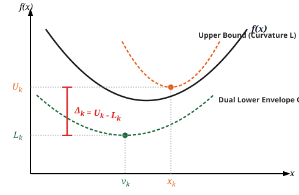

TL;DR
Proofs of Nesterov's accelerated gradient method typically follow one of two paths: 1. Lyapunov arguments and algebraic identities: Verifying clever potential functions whose decay certifies acceleration after the fact. While mathematically rigorous, this offers little insight for algorithmic design. 2. Estimating sequences: Yurii Nesterov's original approach, which does offer a design philosophy, but is often viewed as technically obscure and algebraically heavy.
Here, we present a more direct derivation. Closely related to estimating sequences, it is more intuitive and philosophically sound: we reframe the algorithm as the continuous shrinkage of a subjective gap function.
This framing ties directly into constructive mathematics: minimizing a function is fundamentally about producing observable certificates of optimality. Intuitively, the subjective viewpoint central to constructivism—evaluating what is known through explicit upper and lower certificates rather than an unobservable ground truth $f^*$—is precisely what enables the derivation of the accelerated method. We suggest this connection is not a coincidence.
Minimization via Bounding Sequences
In constructive analysis, a real number is not a static completed infinity; it is operationalized as a process—a sequence of rational intervals, or equivalently, paired sequences of upper and lower bounds that tighten arbitrarily close.
Our goal is to find the minimum of an $L$-smooth, $\mu$-strongly convex function $f: \mathbb{R}^n \to \mathbb{R}$—that is, to construct an algorithm that produces the real number $f^* \coloneq \inf f$ and its minimizer. Because a real number is a sequence of upper and lower bounds, constructing the minimum value logically (and tautologically) demands constructing two observable sequences:
- A sequence of upper bounds $\{U_k\}_{k=0}^\infty$ such that $U_k \ge f^*$
- A sequence of lower bounds $\{L_k\}_{k=0}^\infty$ such that $L_k \le f^*$
The algorithm is governed by a singular operational principle: use knowledge of upper and lower bounds together to derive optimal query points, and update both bounds simultaneously from the same oracle evaluations.
A large gradient improves the upper bound, while a small gradient improves the lower bound. Thus, regardless of what the oracle returns, the gap always closes.
Dual Models from the First-Order Oracle
Let $f \in \mathcal{F}_{\mu, L}^{1,1}(\mathbb{R}^n)$ be $\mu$-strongly convex with an $L$-Lipschitz continuous gradient ($\mu > 0$). At each iteration, we evaluate the gradient oracle at a query point $\mathbf{\color{#166534}{y_k}} \in \mathbb{R}^n$. This single oracle call simultaneously yields two quadratic models of $f$:
1. The Local Quadratic Upper Bound (Primal Descent)
- By $L$-smoothness, the function is upper-bounded globally by a parabola of curvature $L$ tangent at $\mathbf{\color{#166534}{y_k}}$. Minimizing this upper bound yields the candidate iterate $x_{k+1} = \mathbf{\color{#166534}{y_k}} - \frac{1}{L}\nabla f(\mathbf{\color{#166534}{y_k}})$, guaranteeing the upper bound:
2. The Global Quadratic Lower Bound (Dual Memory)
- By $\mu$-strong convexity, the hyperplane at $\mathbf{\color{#166534}{y_k}}$ can be lifted into a quadratic lower-bounding minorant of curvature $\mu$:
- Rather than retaining the entire history of cutting planes, we maintain an accumulated lower bound $Q_k(x)$ via an exponential moving average with parameter $\mathbf{\color{#166534}{\alpha}} \in (0, 1)$:
Initialized with $Q_0(x) = f(x_0) + \frac{\mu}{2}\Vert{}x - x_0\Vert{}^2$ (or the first supporting quadratic $q(x; x_0)$), the Hessian of $Q_k(x)$ remains identically $\mu I$ for all $k$. In vertex form:
$$\begin{equation*} Q_k(x) = L_k + \frac{\mu}{2}\Vert{}x - v_k\Vert{}^2 \end{equation*}$$where $L_k \coloneq \min_x Q_k(x)$ is the scalar lower bound on $f^*$, and $v_k \coloneq \arg\min_x Q_k(x)$ represents the center of accumulated gradient evidence.
3. The Certificate Gap as a Subjective Measure of Convergence
Having constructed observable upper and lower certificates, we define the certificate gap at iteration $k$ as:
$$\begin{equation*} \Delta_k \coloneq U_k - L_k \end{equation*}$$
The certificate gap $\Delta_k$ is fundamentally a subjective measure of convergence.
In conventional optimization analysis, convergence is stated objectively against the true, unobservable optimum: $f(x_k) - f^* \le \epsilon$. But in practice, an algorithm never knows $f^*$ nor the true error $f(x_k) - f^*$.
Consider an analogy: suppose an algorithm takes a tolerance $\epsilon$ and guarantees an $\epsilon$-accurate rational approximation of $\pi$. We run $\hat{\pi}(0.1)$ and it returns $3.14$. What is the precision of this result?- The Objectivist answer: At least $0.01$ (or $\approx 0.0016$), comparing $3.14$ against the external reality of $\pi$.
- The Subjectivist answer: Exactly $0.1$. The algorithm only certified that $|\hat{\pi} - \pi| \le 0.1$. Any tighter agreement is an uncertified accident of luck.
Construction of the Algorithm
Our goal is to understand how the certificate gap evolves from one step to the next: presented with some memory state $(x_k, v_k, L_k, U_k)$, how does $\Delta_{k+1} \coloneq U_{k+1} - L_{k+1}$ relate to the previous gap $\Delta_k$?
It is critical to distinguish fixed quantities from free variables:- The problem constants $L$ and $\mu$ are fixed.
- The state history $(x_k, v_k, L_k, U_k)$ is already fixed from the previous steps.
- The parameters we seek to design are the free variables: the query point $\mathbf{\color{#166534}{y_k}} \in \mathbb{R}^n$ and the mixing scalar $\mathbf{\color{#166534}{\alpha}} \in (0, 1)$, highlighted in green.
1. Expanding the Lower Bound Minimum Recurrence
To express $\Delta_{k+1} \coloneq U_{k+1} - L_{k+1}$, we first need the explicit recurrence for the lower bound minimum $L_{k+1} \coloneq \min_x Q_{k+1}(x)$.
Substituting the canonical form $Q_k(x) = L_k + \frac{\mu}{2}\Vert{}x - v_k\Vert{}^2$ into the update definition $Q_{k+1}(x) = (1 - \mathbf{\color{#166534}{\alpha}}) Q_k(x) + \mathbf{\color{#166534}{\alpha}}\, q(x; \mathbf{\color{#166534}{y_k}})$ and finding the unconstrained minimizer $v_{k+1}$ via $\nabla Q_{k+1}(v_{k+1}) = 0$ yields the center update:
$$\begin{equation*} v_{k+1} = (1 - \mathbf{\color{#166534}{\alpha}}) v_k + \mathbf{\color{#166534}{\alpha}} \mathbf{\color{#166534}{y_k}} - \frac{\mathbf{\color{#166534}{\alpha}}}{\mu}\nabla f(\mathbf{\color{#166534}{y_k}}) \end{equation*}$$Evaluating the minimum value $L_{k+1} = Q_{k+1}(v_{k+1})$ gives:
$$\begin{equation*} L_{k+1} = (1 - \mathbf{\color{#166534}{\alpha}}) L_k + \mathbf{\color{#166534}{\alpha}} f(\mathbf{\color{#166534}{y_k}}) - \frac{\mathbf{\color{#166534}{\alpha}}^2}{2\mu}\Vert{}\nabla f(\mathbf{\color{#166534}{y_k}})\Vert{}^2 + \mathbf{\color{#166534}{\alpha}}(1 - \mathbf{\color{#166534}{\alpha}})\langle \nabla f(\mathbf{\color{#166534}{y_k}}), v_k - \mathbf{\color{#166534}{y_k}} \rangle + \frac{\mathbf{\color{#166534}{\alpha}}(1 - \mathbf{\color{#166534}{\alpha}})\mu}{2}\Vert{}\mathbf{\color{#166534}{y_k}} - v_k\Vert{}^2 \end{equation*}$$Dropping the non-negative dispersion term $\frac{\mathbf{\color{#166534}{\alpha}}(1 - \mathbf{\color{#166534}{\alpha}})\mu}{2}\Vert{}\mathbf{\color{#166534}{y_k}} - v_k\Vert{}^2 \ge 0$ preserves the lower bound inequality:
$$\begin{equation*} L_{k+1} \ge (1 - \mathbf{\color{#166534}{\alpha}}) L_k + \mathbf{\color{#166534}{\alpha}} f(\mathbf{\color{#166534}{y_k}}) - \frac{\mathbf{\color{#166534}{\alpha}}^2}{2\mu}\Vert{}\nabla f(\mathbf{\color{#166534}{y_k}})\Vert{}^2 + \mathbf{\color{#166534}{\alpha}}(1 - \mathbf{\color{#166534}{\alpha}})\langle \nabla f(\mathbf{\color{#166534}{y_k}}), v_k - \mathbf{\color{#166534}{y_k}} \rangle \end{equation*}$$2. Upper-Bounding the Certificate Gap Recurrence
Subtracting this lower bound inequality from the descent upper bound $U_{k+1} = f(\mathbf{\color{#166534}{y_k}}) - \frac{1}{2L}\Vert{}\nabla f(\mathbf{\color{#166534}{y_k}})\Vert{}^2$:
$$\begin{equation*} \Delta_{k+1} \le f(\mathbf{\color{#166534}{y_k}}) - \frac{1}{2L}\Vert{}\nabla f(\mathbf{\color{#166534}{y_k}})\Vert{}^2 - (1 - \mathbf{\color{#166534}{\alpha}}) L_k - \mathbf{\color{#166534}{\alpha}} f(\mathbf{\color{#166534}{y_k}}) + \frac{\mathbf{\color{#166534}{\alpha}}^2}{2\mu}\Vert{}\nabla f(\mathbf{\color{#166534}{y_k}})\Vert{}^2 - \mathbf{\color{#166534}{\alpha}}(1 - \mathbf{\color{#166534}{\alpha}})\langle \nabla f(\mathbf{\color{#166534}{y_k}}), v_k - \mathbf{\color{#166534}{y_k}} \rangle \end{equation*}$$Grouping the zero-order terms yields $f(\mathbf{\color{#166534}{y_k}}) - \mathbf{\color{#166534}{\alpha}} f(\mathbf{\color{#166534}{y_k}}) = (1 - \mathbf{\color{#166534}{\alpha}})f(\mathbf{\color{#166534}{y_k}})$. To relate this to the previous upper bound $U_k$, we invoke convexity of $f$ between $\mathbf{\color{#166534}{y_k}}$ and the prior iterate $x_k$:
$$\begin{equation*} f(\mathbf{\color{#166534}{y_k}}) \le f(x_k) + \langle \nabla f(\mathbf{\color{#166534}{y_k}}), \mathbf{\color{#166534}{y_k}} - x_k \rangle \le U_k + \langle \nabla f(\mathbf{\color{#166534}{y_k}}), \mathbf{\color{#166534}{y_k}} - x_k \rangle \end{equation*}$$Substituting this into the gap inequality and collecting $(1 - \mathbf{\color{#166534}{\alpha}})(U_k - L_k) = (1 - \mathbf{\color{#166534}{\alpha}})\Delta_k$:
$$\begin{equation*} \Delta_{k+1} \le (1 - \mathbf{\color{#166534}{\alpha}})\Delta_k + \underbrace{(1 - \mathbf{\color{#166534}{\alpha}})\left\langle \nabla f(\mathbf{\color{#166534}{y_k}}),\, (\mathbf{\color{#166534}{y_k}} - x_k) - \mathbf{\color{#166534}{\alpha}}(v_k - \mathbf{\color{#166534}{y_k}}) \right\rangle}_{\text{Directional Error Term}} - \underbrace{\left(\frac{1}{2L} - \frac{\mathbf{\color{#166534}{\alpha}}^2}{2\mu}\right)\Vert{}\nabla f(\mathbf{\color{#166534}{y_k}})\Vert{}^2}_{\text{Magnitude Error Term}} \end{equation*}$$Crucially, the relation to the previous gap $\Delta_k$ appears scaled by $(1 - \mathbf{\color{#166534}{\alpha}})$, alongside two remainder terms: a directional error term containing the vector free variable $\mathbf{\color{#166534}{y_k}}$, and a magnitude error term containing the scalar free variable $\mathbf{\color{#166534}{\alpha}}$. We can now ask: how must we set these free variables so that the error terms vanish and pure shrinkage emerges?
Extinguishing Adversarial Errors
Because $f$ is an arbitrary black-box function, an adversary selects the gradient $\nabla f(\mathbf{\color{#166534}{y_k}})$. To guarantee contraction unconditionally, both error terms must be neutralized independently:
1. Directional Immunity (Determining $\mathbf{\color{#166534}{y_k}}$)
If the displacement vector inside the inner product is non-zero, an adversary can select $\nabla f(\mathbf{\color{#166534}{y_k}})$ aligned with that direction of arbitrary magnitude, blowing up the gap inequality. We spend our vector degree of freedom $\mathbf{\color{#166534}{y_k}}$ to force this term to zero:
$$\begin{equation*} (\mathbf{\color{#166534}{y_k}} - x_k) - \mathbf{\color{#166534}{\alpha}}(v_k - \mathbf{\color{#166534}{y_k}}) = 0 \implies \mathbf{\color{#166534}{y_k}} = \frac{x_k + \mathbf{\color{#166534}{\alpha}} v_k}{1 + \mathbf{\color{#166534}{\alpha}}} \end{equation*}$$The query point is necessarily a convex combination of the current state $x_k$ and the historical dual anchor $v_k$.
2. Magnitude Immunity (Determining $\mathbf{\color{#166534}{\alpha}}$)
With the directional error eliminated, the remaining excess depends entirely on the scalar magnitude $\Vert{}\nabla f(\mathbf{\color{#166534}{y_k}})\Vert{}^2$. We spend our scalar degree of freedom $\mathbf{\color{#166534}{\alpha}}$ to ensure the quadratic coefficient is non-negative:
$$\begin{equation*} \frac{1}{2L} - \frac{\mathbf{\color{#166534}{\alpha}}^2}{2\mu} \ge 0 \implies \mathbf{\color{#166534}{\alpha}} \le \sqrt{\frac{\mu}{L}} \end{equation*}$$Maximizing the contraction rate $(1 - \mathbf{\color{#166534}{\alpha}})$ demands choosing the largest admissible parameter:
$$\begin{equation*} \mathbf{\color{#166534}{\alpha}} = \sqrt{\frac{\mu}{L}} = \frac{1}{\sqrt{\kappa}} \end{equation*}$$Synthesis: Primal and Dual Mechanics
Fixing these parameters leaves zero residual error:
$$\begin{equation*} \Delta_{k+1} \le \left(1 - \frac{1}{\sqrt{\kappa}}\right)\Delta_k \implies f(x_k) - f^* \le U_k - L_k \le \left(1 - \frac{1}{\sqrt{\kappa}}\right)^k \Delta_0 \end{equation*}$$Nesterov's acceleration is not an ad-hoc heuristic of physical momentum. It is an exact coupling of primal gradient descent with dual mirror descent:
- Large gradient norm $\Vert{}\nabla f(\mathbf{\color{#166534}{y_k}})\Vert{}$: The primal step makes substantial progress, pushing the upper bound down by $\mathcal{O}\left(\frac{1}{L}\Vert{}\nabla f\Vert{}^2\right)$.
- Small gradient norm $\Vert{}\nabla f(\mathbf{\color{#166534}{y_k}})\Vert{}$: The current point is nearly stationary, and the dual surrogate minimum $L_{k+1}$ rises by $\mathcal{O}\left(\mathbf{\color{#166534}{\alpha}} f(\mathbf{\color{#166534}{y_k}})\right)$.